IB Docs (2) Team
IB Docs (2) Team

Unit 4.6 Balance of payments
The balance of payments (BOP) is an account that records the inflow (credit items) and outflow (debit items) of funds to and from the domestic economy which results from a country’s financial transactions with other countries in the world. The balance of payments data is measured over one year but is recorded quarterly.
- Meaning of the balance of payments
- Current account
- Capital account
- Financial account
- Balance of payment current account deficits
- Implications of a persistent deficit on the balance of payment current account
- Causes of a balance of payments current account deficit
- Policies to correct a persistent balance of payments current account deficit
Revision material
 The link to the attached pdf is revision material from Unit 4.6 Balance of payments. The revision material can be downloaded as a student handout.
The link to the attached pdf is revision material from Unit 4.6 Balance of payments. The revision material can be downloaded as a student handout.
Meaning of the balance of payments
The balance of payments (BOP) is an account that records the inflow (credit items) and outflow (debit items) of funds to and from the domestic economy which results from a country’s financial transactions with other countries in the world. The balance of payments data is measured over one year but is recorded quarterly. The balance of payments is a summary of transactions between a country's households, businesses and government with individuals, businesses and governments in other countries.
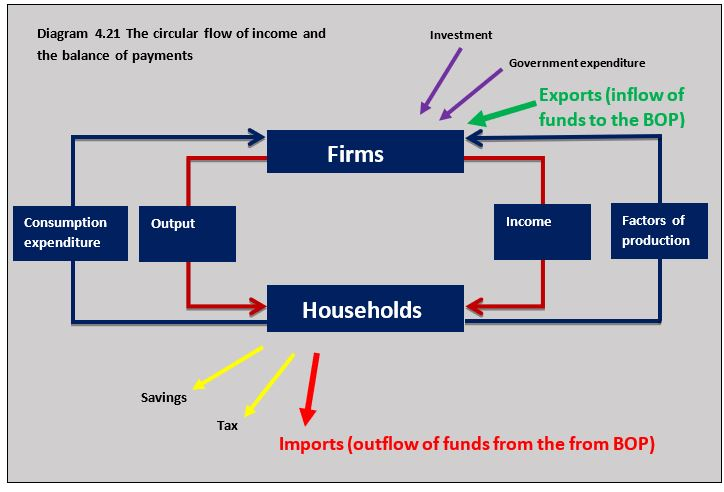
Diagram 4.21 shows the circular flow of income for an economy which illustrates the inflow and outflow of funds in the form of exports (injections) and imports (withdrawals). The balance of payments records these flows over a given time period.Different sections of the balance of payments
The balance of payments account is made up of 5 sections which will be covered in detail in this chapter.
The different sections of the balance of payments can be summarised as:
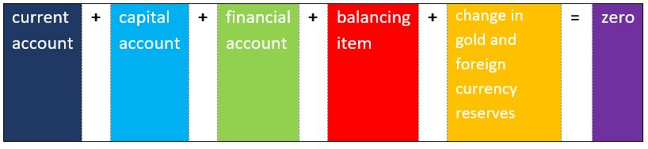
The balance of payments account should balance
The account follows the basic accounting principle that to have the foreign currency to pay for something a country must have received the currency from somewhere. For example, for France to import a $25,000 Ford car from the US it must have $25,000 in US dollars to pay for the car, which it has either earned from exporting to the US or be the result of an inflow of investment funds. If you think of this principle for every transaction a country is involved in, you can see why the balance of payments must balance (adds up to zero). In reality, the account does not get to a zero value because of the huge number of transactions taking place which means there are always errors and items missed out in compiling the account. This is why the balance of payments includes a balancing item to cover errors and omissions.
Current account
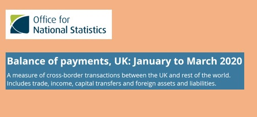
The current account on the balance of payments records the monetary inflows and outflows of funds from trade in goods and services, investment incomes and transfer payments. It is called the current account because the currency flows it generates cause relatively short-term movements in the flow of funds in and out of the economy.The current account can be broken down into:
Trade in goods (visible balance)
This is the inflow of funds from exported goods purchased by buyers in a foreign country less the outflow of funds from imported goods purchased by buyers in the domestic economy. Visible goods such as machinery, chemicals, electronic products, electrical equipment and pharmaceuticals are examples of the goods traded on the current account.
Trade in services (invisible balance)
This is the inflow of funds from exported services purchased by buyers in a foreign country less the outflow of funds from imported services purchased by buyers in the domestic economy. Examples of trade services include banking, insurance, legal services and shipping.
Net income flows
An inflow of funds on domestic assets owned overseas is a credit item and on the current account. An outflow of funds on foreign assets owned in the domestic economy is a debit item on the current account. For example, interest paid on loans made to foreign companies to domestically based lenders is an inflow of funds and rent earned on property owned in the domestic economy that goes overseas is an outflow on the current account.
Current transfers
The net current transfer of funds in and out of the domestic economy is recorded on the current account. Foreign aid receipts (inflows) and payments (outflows) are examples of the movement of funds as current transfers. Current transfers also include remittances where, for example, a foreign worker in the domestic economy sends some of their wages back to their home country. This would be an outflow of funds on the current account.
Surpluses and deficits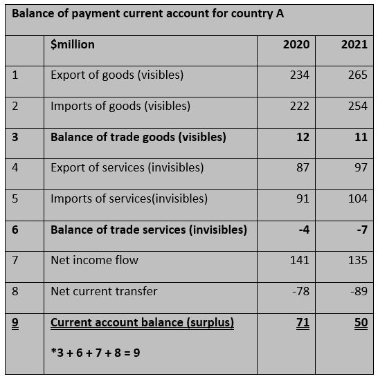
- A surplus on the current account of the balance of payments occurs when the value of inflows of funds on the current account is greater than the value of outflows of funds.
- A deficit on the current account occurs when the value of the outflow of funds is greater than the value of the inflow of funds
- In theory, the current account can be in equilibrium when the value of inflows equals outflows.
The table sets out the current account for Country A. The account shows Country A has a current account surplus in 2019 ($71m) and 2020 (50m).
Germany is one of the most powerful trading nations in the world. It has been reported by the influential IFO institute that Germany’s current account surplus was $293 billion last year. This is the fourth year in a row that Germany has had the largest current account surplus in the world. It is well ahead of Japan (number 2) at $194 billion. Germany’s exports account for 41% of its GDP so they have a very significant impact on its economy.
Much of Germany’s trading success comes from the strength of its production of vehicles, machinery, chemicals, electronics goods and pharmaceuticals. World-famous German brand names such as Volkswagen, Bosch, Siemens, Bayer and SAP are renowned all over the world for their high-quality engineering and performance. Germany has come under some pressure from the IMF and the EU to try and close its current account surplus by increasing domestic demand. The IMF believes that Germany’s surplus creates deficits in other countries, and it would like to see economic growth rise in other areas of the world.
Questions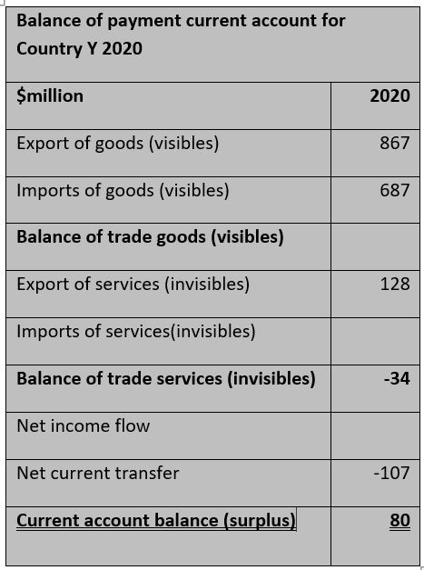
The data in the table is the balance of payments current account data for Country Y which is in a similar trading position to Germany.
a. Outline what balance of payments current account shows. [2]
The current account on the balance of payments records the monetary inflows and outflows of funds from trade in goods and services, investment incomes and transfer payments. It is called the current account because it records short-term movements in funds into and out of the economy.
b. Define the term visible trade. [2]
Visible trade is trade in manufactured goods or primary commodities.
c. Complete the current account balance of payments for Country Y by calculating:
(i) Balance of traded goods (visibles)
$867 million - $687 million = $180 million
(ii) Imports of services (invisibles)
$128 million - $162 million = -$34 million
(iii) Net income flow
$180 milion - $34 million + 41 million - $107 million = $80 million
d. Outline two items that could be included under net income flows. [4]
Net income flows could include income to individuals or businesses from the following assets owned abroad:
- Rent on property
- Dividend on shares
- Profits from businesses
- Interest on loans or bonds
Investigation
Research into another successful exporting country. Are the reasons for this country's success similar to Germany's?
Capital account
The capital account is a relatively small part of the balance of payments. It is made up of the purchase and sale of non-produced, non-financial assets (intangible assets). This includes patents, copyrights, band names and franchises. For example, if the US pharmaceutical company Roche bought a patent from a German pharmaceutical company for $200 million then this would be an outflow from the US capital account and an inflow on the German capital account. Capital transfers are also included in the capital account, which is from the sale and purchase of certain fixed assets such as buildings.
Financial account
This represents the inflow and outflow of funds involving the purchase and sale of different types of assets. When a foreign business or individual buys a domestic asset such as shares in a company there will be an inflow of funds. If a domestic individual or firm buys bonds sold by a foreign government, there will be an outflow of funds.
The financial account can be broken down into three areas:
Direct investment
Direct investment is where an individual or business buys assets to earn a stream of future income from the asset. A major part of this is foreign direct investment (FDI) where an investor acquires a significant part of the whole of a business in another country. For example, if Coca-Cola bought 50 per cent of a South African drinks manufacturer for $400 million then this would be a $400 million inflow to the South African financial account. It is worth remembering that any profit that Coca-Cola repatriates to the United States would be an outflow of funds on the net income section of South Africa's current account.
Portfolio investment
Portfolio investment is the purchase of shares and bonds to earn interest and dividends from the assets and make a gain on any increase in value of the assets. Portfolio investment is different to direct investment because the portfolio investor is not looking to manage the asset they purchase. A Japanese bank that buys shares in Australian companies does not want to manage the businesses of the shares they buy, they want to earn dividends and make a financial gain on owning the shares.
Reserve assets
This is where countries hold reserves of gold and foreign currency to provide the foreign exchange needed to buy imports or purchase foreign assets when not enough foreign exchange has been earned by the country from exports and investment into the domestic economy. If the sum of the current account, capital account and financial account results in an overall surplus then foreign exchange will be added to the reserves. But if these accounts give an overall deficit then funds will be needed from the reserves to fund the deficit.
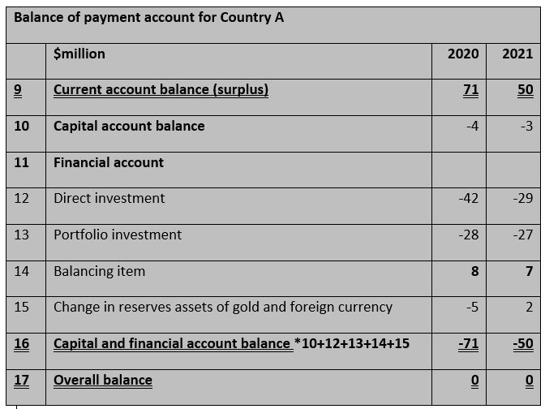
The table sets out the balance of payments account for Country A. The current account from Country A in the table above is used to complete the account.
Balance of payments equation
In the example for country A the balance of payments equation for 2020 is:
current account (71) + capital account (-4) + financial account (-70) + balancing item (8) + reserves (-5) = 0
and the balance equation for 2020 is:
current account (50) + capital account (-3) + financial account (-56) + balancing item (7) + reserves (2) = 0
*$ million
This means Country A added $5 million to its reserves in 2020 and withdrew $2 million in 2021.
By the start of the third quarter of 2020 Chinese investors own $1.08 trillion of US government debt. The purchase of US government bonds means 4 per cent of the $25.8 trillion US national debt is held by Chinese businesses, banks and individuals. The current interest rate on US bonds is just over 1 per cent which means the interest payments each year of $250 billion will flow from the US to China. But overseas investment does not just flow one way. US investors hold over $1 trillion of shares in Chinese businesses such as Alibaba and Lenovo and the dividends paid on these shares flows back to the US.
 Worksheet questions
Worksheet questions
Questions
a. Outline the difference between direct investment and portfolio investment in the financial account of the balance of payments. [4]
Direct investment in the balance of payments is the investment by individuals or businesses in one country in overseas assets which earn a stream of income and owners of the assets have some control over the management of the assets. Portfolio investment in the balance of payments is the investment by individuals or businesses in one country in overseas assets which earn a stream of income and owners of the assets have no control over the management of the assets.
b. Outline where the interest payments on US government bonds to Chinese investors would be entered in the US balance of payments. [4]
The interest payments made to Chinese holders of US government bonds would be an outflow from the current account of the US balance of payments under net income flows.
c. Explain where non-controlling US investment in a Chinese company such as Alibaba and Lenovo would be entered in the Chinese balance of payments. [4]
The US investment in Chinese companies would be inflow on the financial account of the Chinese balance of payments under the portfolio section.
Investigation
Research into the financial account of another country.
Balance of payment current account deficits (HL)
Nature of balance of payments current account deficits
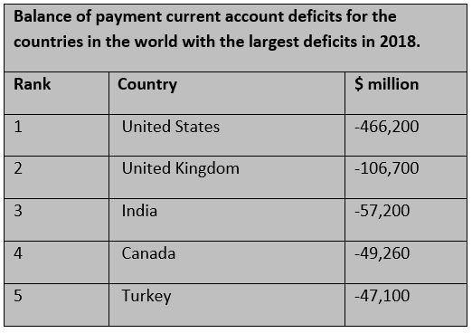
A country will experience a current account deficit on the balance of payments if the value of inflows of funds on the current account is less than the value of outflows of funds on the current account. Economists often focus on the trade in goods and services aspect on a current account deficit where the value of exports is less than the value of imports in a given time period. Economists also distinguish between a short-term deficit and a situation where a country has a long-term, persistent deficit over a number of years. The table sets out the countries in the world with the largest balance of payments current account deficits.Implications of a persistent deficit of current account
Financial account surplus
If there is a deficit on the current account balance of payments it often needs to be financed by running a surplus on the financial and capital accounts. This normally involves a deficit country drawing in direct investment funds and portfolio investment funds from abroad. For example, the US has a significant current account deficit with China, and this is partly financed on the financial account where Chinese businesses and individuals buy US government bonds and shares in US companies. There are problems associated with this:
- By selling bonds to China the US is increasing its external debt with another country.
- The US may need to increase interest rates on the bonds to attract Chinese buyers and this might increase US market interest rates.
- Interest payments on the debt will be future outflows on the US current account.
- If Chinese businesses buy shares in US companies it transfers ownership of US companies overseas.
- Dividend payments of company profits will be made to Chinese buyers of US shares can increase outflows on the US current account.
Gold and currency reserves
If there is a deficit in the current account and a deficit in the financial account, the central bank may need to buy the domestic currency using gold and foreign exchange reserves (decrease the reserves) to make sure there is enough foreign currency available for domestic businesses and individuals. For example, Pakistan is currently suffering from a fall in its foreign exchange reserves because of high debt interest payments and a trade deficit in its current account. Gold and foreign exchange reserves are finite and if they fall too low this can cause a significant fall in a deficit country's exchange rate.
Exchange rate depreciation
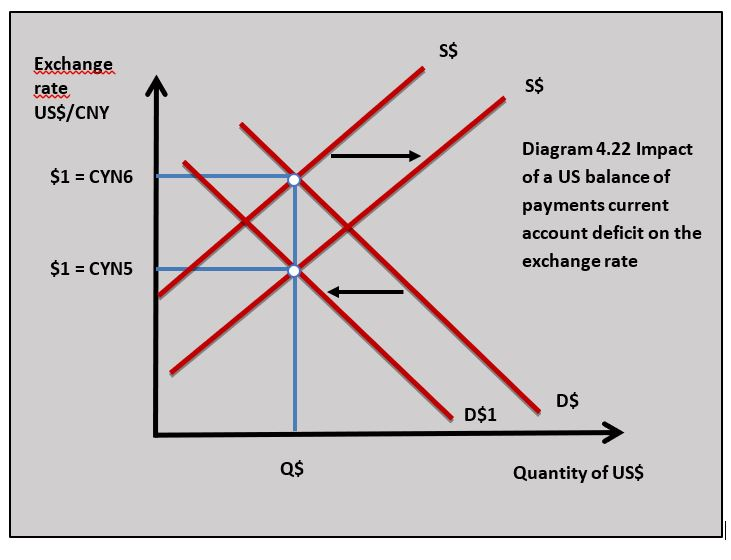
A deficit in the current account can lead to a depreciation in the exchange rate. For example, if inflows to the current account fall because of a decrease in the demand for a country’s exports this will lead to a fall in the demand for the currency. If outflows on the current account increase because of a rise in the value of imports, then the supply of the country’s currency will increase. Diagram 4.22 shows the impact of an increase in the supply of US$ and a fall in demand for $US that might result from an increase in its current account deficit.
This situation is made worse if a country struggles to attract funds to the financial account and this can lead to a significant fall in the currency. This situation has occurred in Turkey over the last few years. A decrease in a country’s exchange rate can help to increase exports and reduce imports as a lower exchange rate decreases export prices and increases import prices. However, higher import prices and import costs to businesses that come from a fall in the exchange rate can add to domestic inflation. A fall in the exchange rate also makes the interest payments as well as the repayments of external debt more expensive.
Economic growth
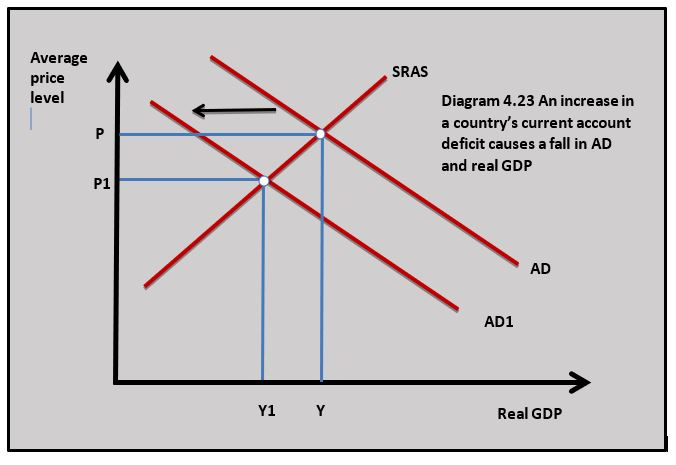
Net exports are a component of aggregate demand and an increase in the country’s balance of payment current account deficit can lead to a fall in aggregate demand and a reduced rate of economic growth. Diagram 4.23 shows the impact an increase in the current account deficit can have on aggregate demand and real GDP. The rise in the current account deficit causes AD to fall to AD1 and real GDP falls from Y to Y1. The fall in economic growth occurs because the current account deficit might cause a fall in household incomes and a rise in unemployment.Benefits of a deficit
Whilst most economists consider a balance of payments current account deficit to be a problem it does have certain benefits:
- If the deficit results from imported capital equipment, then this could be a good thing because the imported capital can be used to improve the efficiency of the domestic economy and increase potential output.
- In the short run, a deficit allows an economy to consume beyond domestic output and its households can enjoy a higher standard of living in the short term. In the long run, however, the fall in economic growth caused by a deficit can reduce living standards.
Causes of a balance of payments current account deficit
Economic growth
When an economy experiences a high rate of economic growth in the boom phase of the business cycle domestic household incomes can rise quickly and individuals will buy more imported goods and services. Firms may also need to buy more imported inputs to increase output as economic growth rises. As households and businesses buy more imports a current account deficit may occur or an existing deficit may increase, assuming there is no change in exports.
Appreciation is the exchange rate
If the value of a country’s currency rises it makes export prices increase and import prices decrease. This can lead to a rise in import expenditure and a fall in export revenue which in turn leads to a rise in a country’s current account deficit. Economists believe some of the current account deficit the US runs with China occurs because the $US is overvalued against the CYN, which gives Chinese producers a price advantage over American producers.
High relative inflation
If a country experiences a higher rate of inflation compared to its major trading partners, then its goods and services will appear uncompetitive in terms of price on international markets. This can lead to a fall in the value of exports and an increase in the value of imports leading to a current account deficit. For example, Zimbabwe has the highest rate of inflation in Africa well above its main African competitors, making its domestic producers uncompetitive.
The fall in the price of a key export
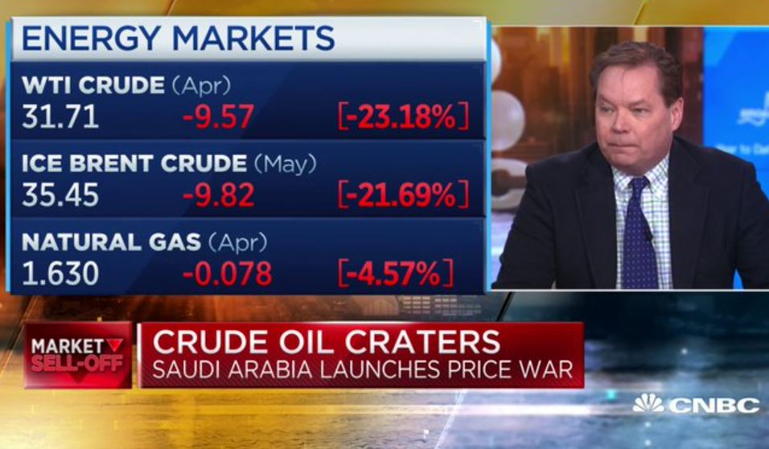
When the price of a key export of a country such as oil falls this can lead to a current account deficit because the demand for oil is price inelastic. For example, as the price of oil has fallen recently it has caused a current account deficit in Russia which is a large oil exporter.The rise in the price of a key import
When there is an increase in the price of an imported good that accounts for a high proportion of the total import expenditure of a country then this can lead to a deficit. This normally applies to a commodity. When oil prices increase significantly then countries that are net importers of oil can experience a current account deficit.
Uncompetitive domestic industry
There may be structural weaknesses in the domestic economy which can make its producers uncompetitive in international markets. For example, the UK's manufacturing sector is not as large or competitive as some other major economies. The UK has had a persistent current account deficit since 1997.
There were more street protests in Buenos Aires today as the growing external debt crisis continued to grip the country. One crucial problem is the huge trade deficit Argentina has. Argentina’s exports plunged by nearly 16 % in March. This was the result of plummeting exports of manufactured products and agricultural goods. Argentina’s deficit was particularly hard hit in its major export markets of Brazil, the United States and China. A current account balance crisis is one Argentina does not need.
In order to finance its deficit huge amounts of money have to be attracted in on its financial account including a big loan from the IMF. All this money has to be paid back and the interest costs are a huge drain on public finances as so much of the debt has been taken on by the government. Debt repayments and interest costs are also a future outflow on Argentina’s balance of payments current account. Argentina’s debt and balance of payments problems need a long-term solution. To start with, the country needs structural reforms to make its manufacturing sector more competitive in international markets.
Questions
a. Define the term current account deficit. [2]
A current account deficit on the balance of payments is where the value of inflows of funds on the current account is less than the value of outflows of funds on the current account.
b. Explain how a 16% fall in Argentina's exports has contributed to its growing current account deficit. [4]
As the value of Argentina's export revenues has fallen by 16% fewer funds are flowing into the Argentinean economy on its current account of the balance of payments. Assuming the value of funds flowing out of the economy in the form of import expenditure, net income flows and net current transfers has not fallen by 16% or more the Argentinean current account deficit will increase.
c. Outline how inflows on Argentina's financial account fund the deficit on its current account. [2]
Inflows of funds into Argentina's financial account come in the form of direct investment, portfolio investment and money from the gold and foreign currency reserves. These inflows provide the currency to pay for the current account deficit.
d. Explain how inflows of funds on Argentina's financial account may affect its current account in the long run. [4]
Money that flows into Argentina's financial account in the form of loans, bond sales, share sales and direct investment will create future payments that will flow out of the Argentinean economy on its current account. For example, interest on the IMF loan made to Argentina will incur interest payments which will flow out of the economy in the future.
Investigation
Research into Argentina’s balance of payment problem.
Policies to correct a persistent current account deficit
Expenditure reducing policy – fiscal and monetary policy
One way of reducing a balance of payments current account deficit is to reduce aggregate demand which will reduce the demand for imported goods and services. Expenditure reducing is applied by using contractionary fiscal and monetary policy. Contractionary fiscal policy involves increasing tax and decreasing government expenditure which reduces aggregate demand and results in a fall in demand for imports. Contractionary monetary policy works in a similar way with higher interest rates decreasing aggregate demand and the demand for imports. The amount of import expenditure falls depends on a country's marginal propensity to import, the higher the marginal propensity to import the greater the fall in import expenditure. In addition, the fall in aggregate demand might increase exports because domestic firms may look for alternative foreign markets if demand for their goods in the domestic market is decreasing because of falling aggregate demand.
Evaluation of expenditure reducing
Strengths
Expenditure-reducing policies may be effective as a short-term policy to deal with a significant current account deficit problem. The IMF provides funding to countries with problems of financing a deficit and one of the conditions of the loan is governments put into place a demand-reducing policy to bring down a current account deficit.
Weaknesses
The problem with an expenditure switching approach is the economy may be pushed into recession with the resulting problems of unemployment and falling household incomes. The consequences of the expenditure-reducing policy may be worse than the problems of a current account deficit.
Expenditure switching policy – Devaluation of the exchange rate
An expenditure switching policy to reduce a balance of payment current account deficit means the central bank devalues the exchange to increase the price of imports and decrease the price of exports. By using this approach, the policy aims to get domestic buyers to change (switch) from imports to domestically produced goods and get foreign buyers to change (switch) towards domestically produced exports. For example, the US could use a devaluation of the US$ against the CYN to try and correct its current account deficit with China. If the US$ was depreciated from $1 = Y6 to $1 = Y5 then US exports in China would decrease in price and Chinese imports in the US would increase in price.
Marshall Lerner condition
The effectiveness of devaluing a currency depends to an extent on the price elasticity demand of imports and exports. The Economists, Alfred Marshall and Abba Lerner (left) said that a devaluation will lead to a correction in a current account deficit if the following (Marshall-Lerner) condition exists:
Price elasticity of demand of exports + price elasticity of demand imports > 1
When a country devalues its exchange rate and the Marshall Lerner condition holds then the devaluation works in the following way:
- The price elasticity of demand for exports is price elastic and the price of exports falls because of a devaluation of the currency export revenue will increase.
- The price elasticity of demand for imports is price elastic, an increase in import prices will lead to a fall in import expenditure
- As a country’s export revenue increases and import expenditure falls the current account balance of payment deficit will decrease and move towards a surplus.
For example, a devaluation of the US$ against the CYN from $1 = Y6 to $1 = Y5 can lead to a correction in the US current account deficit if:
PED US exports + PED US imports > 1
The J-curve effect
A J-curve effect might be observed following the devaluation of a country’s currency. In this case, we are going to use a devaluation of the US$ and its impact on the US current account deficit.
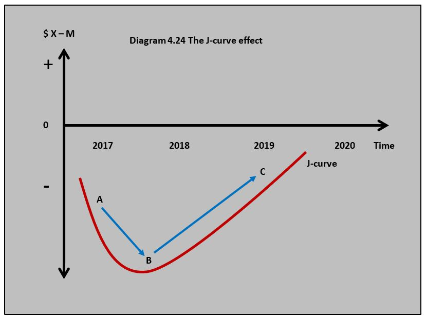
The J-curve can be explained by the way the price elasticity of demand and supply change over time. In the short run, the devaluation of the US$ actually makes the size of the US deficit increase. This is because the price elasticity of demand for exports and imports will be relatively low (inelastic) as it takes time for US buyers of imports and foreign buyers of US exports to adjust to the change in prices brought about by a devaluation. US firms will have contracts to honour and firms as well as consumers may be reluctant to buy alternative US-produced products if they are loyal to imported brands.
On the supply side, US firms may not be able to meet the rise in demand a devaluation brings in the short run because they may not have access to the resource inputs they need. This makes the supply of domestically produced goods inelastic in the short run. In the long run, demand for US exports and imports can become more price elastic, which means US export revenues start to rise and US import expenditure starts to fall. The supply of domestic US producers will also become more price elastic and they will be more able to meet the rise in the demand for the goods and services they produce.
The change in price elasticity of demand and supply over time produces a J-curve effect. As the currency devalues the current account deficit deteriorates at first because demand and supply for US imports and exports are price inelastic and we move from point A to point B in diagram 4.24. In the long term, the deficit improves and moves towards equilibrium as the demand and supply for US imports and exports become more elastic. The economy moves from point B to point C.
The flow chart illustrates the way a devaluation of the US$ can correct its current account deficit over time.
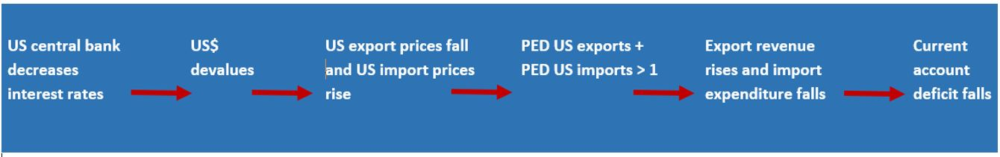
Evaluation of expenditure switching
Strengths
- Devaluation of a country’s exchange rate is a more targeted policy at reducing a current account deficit than an expenditure-reducing policy. Unlike contractionary fiscal and monetary policy, devaluing the exchange rate is less likely to have a negative impact on growth and employment.
- A government can devalue the currency incrementally using interest rates and direct intervention to make its producers more competitive domestically and in overseas markets.
- Devaluing the exchange rate by decreasing interest rates can increase aggregate demand leading to economic growth and a reduction in unemployment.
Weaknesses
- When the currency devalues it increases the price of imports which adds to domestic cost-push inflation. By increasing the price of imported raw materials and components a devaluation adds to business costs and can reduce the competitiveness of domestic producers in international markets.
- Devaluing the exchange rate by decreasing interest rates can increase aggregate demand and lead to inflation.
- The process of devaluing the currency to reduce a current account deficit is unpredictable because it relies on so many stages in the process working in a particular way. For example, a cut in interest rates needs to cause a fall in the exchange rate which needs to cause a rise in export revenue and a fall in import expenditure. There are also so many other variables involved that affect export revenues and import expenditures it is difficult to forecast the exact impact of a devaluation.
- Other countries might react by competitively devaluing their currency in response to a country’s devaluation. For example, if the US chose to devalue the US$, Japan might decide to devalue the Yen.
Expenditure switching supply-side policies
Market-based supply side
Government can put into place market-based supply-side policies which improve the efficiency of domestic firms and makes them more competitive in international markets. This might involve reducing the power of trade unions, privatisation of key industries, reducing direct taxes, adopting a strong competition policy and reducing the amount of bureaucracy and ‘red-tape’ that affects business. The improved efficiency of domestic firms will make them more competitive in export markets as well as in their own domestic markets.
The problem with this approach is the time it takes to work. The full effects of this type of supply-side approach can take years to be effective which makes the policy inappropriate for an immediate current account deficit problem.
Interventionist supply-side
Governments can resort to protectionist measures in response to a balance of payment current account deficit. A government could also use education and training, investment in infrastructure, and support for innovation to improve the competitiveness of domestic producers in international markets.
Strengths
- Market-based and interventionist supply-side policies can improve the long-term competitiveness of the economy which deals more effectively with underlying causes of a current account deficit.
- Supply-side policies such as investment in infrastructure not only benefit the current account deficit, they can increase potential output and long-run economic growth.
- Protectionism is a targeted policy that can reduce imports in the short run.
Weaknesses
- Tariffs and quotas will reduce the quantity of imports, but they nearly always result in retaliation which might affect export industries.
- Tariffs and quotas increase the price of imported goods to consumers and businesses and can result in a welfare loss.
- Government support to export industries through subsidies and grants has an opportunity cost in terms of other areas of government expenditure.
- Government intervention in export industries can lead to political decision-making. A government might impose trade barriers on another country’s industries for political rather than economic reasons.
- Market base supply-side policies that lead to deregulation and reduced protection for employees might lead to poorer working conditions and exploitation of workers.
Zambia urgently needs support as its external debt crisis grows. Zambia is one of the largest producers of copper in the world and recent falls in the price of copper have caused a significant fall in its export revenues. The resulting trade deficit and falling in the value of the Zambian Kwacha have pushed up inflation and made the cost of financing its external debt even more expensive. The ratings agency Fitch said Zambia could default on its debt.
The Zambian government is in talks with the IMF, which wants the country to put reforms in place to reduce its current account balance of payments deficit. This involves tightening fiscal and monetary policy to reduce the demand for imports and control inflation. The IMF also wants supply-side reforms to be put in place that improves the Zambian economy's competitiveness and allow it to diversify away from copper. Reducing government regulations on business would certainly help domestic firms to be more competitive. Increased investment in infrastructure would also create better operational conditions for Zambian businesses.
Worksheet questions
Questions
a. Explain three consequences for Zambia of a persistent deficit on its current account balance of payments. [10]
Answers might include:
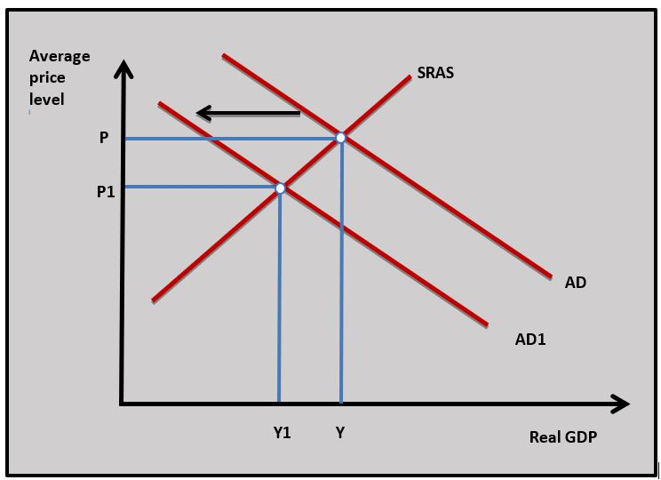
- Definition of current account balance of payments and persistent deficit on the current account.
- A diagram to show how Zambia's deficit on the current account of the balance of payments could lead to a fall in AD and economic growth.
- An explanation that a current account deficit could lead to a fall in AD and economic growth because of a fall in net exports(X-M).
- An explanation that a current account deficit could lead to a fall in Zambia's exchange rate which increases import costs and increases the rate of inflation.
- An explanation that a current account deficit needs to be financed by currency inflows on Zambia's financial account and this can lead to an outflow of income on their current account.
- An explanation that a current account deficit could lead to a decline in Zambia's finite gold and foreign currency reserves which could cause a currency crisis.
*Choose any three consequences.
b. Using a real-world example, evaluate the view that contractionary fiscal and monetary policies are the best way to reduce a current account balance of payments deficit. [15]
Answers might include:
- Definitions of contractionary monetary policy, contractionary fiscal policy and current account balance of payments deficit (this can be referred to in part a.)
- A diagram to show the effect of contractionary fiscal and monetary policy.
- An explanation that contractionary fiscal policy (increasing tax and cutting government expenditure) and contractionary monetary policy (increasing interest rates) is an expenditure-reducing approach to reducing a current account deficit. As AD falls there is a fall in demand for imports which reduces the current account deficit.
- An example of the application of contractionary monetary and fiscal policy to reduce a balance of payments current account deficit. In this case, Zambia could be used.
- Evaluation might include discussion of the disadvantages of using contractionary fiscal and monetary policy such as the deflationary effects on the economy and the unemployment this could cause. Contractionary fiscal and monetary policy may not deal with the underlying cause of a current account deficit such as uncompetitive domestic producers or an over-reliance on a particular industry that is in decline. The answer should also include some discussion of an alternative policy approach such as currency devaluation or supply-side policies.
Investigation
Investigate the Zambian the balance of payments problems of the Zambian economy.
A country's balance of payments accounts is a complex set of interrelationships that exists between the flow of funds between countries. The flow of funds is generated by trade, investment and income from assets. An example of interdependence in the balance of payments would be the US balance of payments current account deficit that exists with China. The deficit means China will have surplus US Dollars which they can then use to buy US assets like US government bonds. The US government bonds held by Chinese businesses and individuals will earn interest which will be an outflow of funds on the US balance of payments current account. Outflows of funds in one country will lead to inflows in others.
Which of the following is a credit item for Country X on its balance of payments?
Interest payments from a foreign country into the domestic economy are a credit item.
Using the data in the table, which of the following is the value of Country A’s balance of payments current account surplus or deficit?
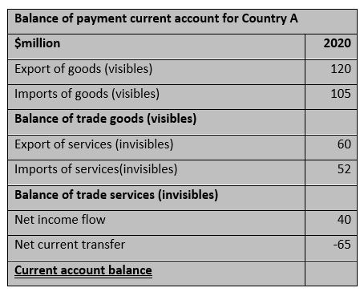
Current account balance: 15m + 8m + 40m - 65m = -2m (deficit)
Which of the following is an example of an inflow of funds from portfolio investment on Country B’s financial account of its balance of payments?
If a foreign bank buys government bonds in Country B this is considered portfolio investment into Country B.
Using the data in the table, which of the following would be the change in gold and foreign currency reserves from Country Y?
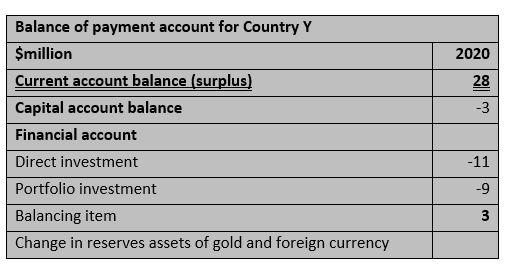
28m - 3m - 11m - 9m + 3m -8m = 0
Which of the following is the least likely effect on Country B having a balance of payments current account deficit?
A balance of payments current account deficit can lead to a fall in demand for Country B's currency and an increase in the supply of its currency. This leads to a depreciation.
Which of the following is most likely to cause a balance of payments deficit for Country Y?
If Country Y's main export decreases in price and it is price inelastic then its export revenue will fall.
Which of the following is not an example of an expenditure reducing policy to reduce a balance of payments current account deficit?
Devaluation of the currency is an expenditure switching policy.
A devaluation of Country A’s currency is most likely to reduce its balance of payments current account deficit if which of the following is true?
If Country A's producers are flexible they can increase output when quantity demanded of exports increases when export prices fall.
Which of the following is not a market-based supply-side policy to reduce a country’s current account deficit?
Subsidies are an interventionist supply-side policy.
Which of the following is most likely to lead to an increase in a balance of payments current account deficit in Country A?
A fall in direct tax in Country A could lead to a rise in its import expenditure which might increase Country A’s balance of payment current account deficit.
 Twitter
Twitter
 Facebook
Facebook
 LinkedIn
LinkedIn